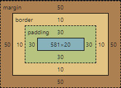
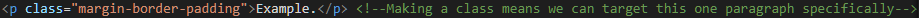
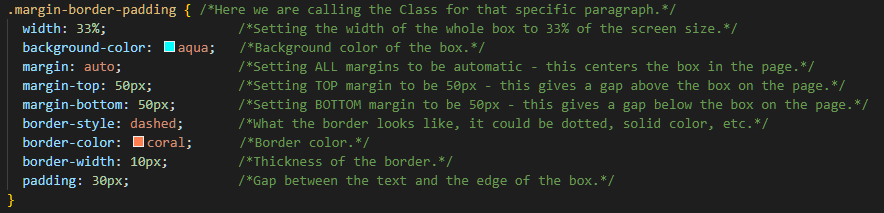
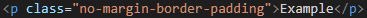
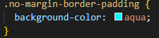

Edan Mourie
Sprint 2 Tech - HTML-CSS Blog
Kia ora and welcome to my Sprint 2 Tech Blog!
The difference between Margin, Border and Padding.
Example.
In the example above, margin, border, and padding can be clearly seen.
Margin is the space between the thing you are editing,
and the things on the page next to it. From the outside of our example box, there is 50pixels (50px) between it and
our underlined heading, and 50px between it and this paragraph.
In this example left and right margins vary in size depending on screen size, as their width is set to Auto.
Border is the outside edge of the item you are editing, as can be seen by the dashed orange line.
Padding is the space between the actual content of the item, in this case the text "Example", and the edge
of the box, which is shown as the aqua color.
Below is an image showing the dimensions of our box, again, left and right margins vary depending on screen size.

Below is the HTML (top image) and CSS code (bottom image) used to create the example box.


If the only code we entered was the background color, it would look like the example below.


Example
The reason there is a gap (or margin) between the example and the paragraphs either side of it, is because a paragraph tag < p > has automatic margins.